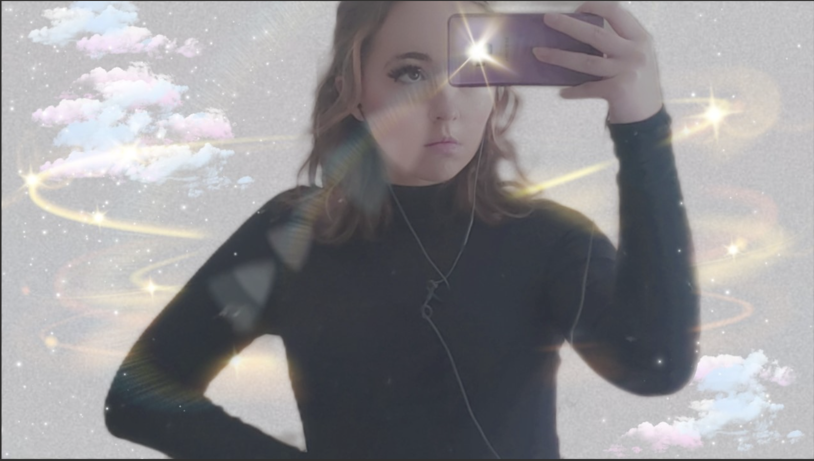

I am a sophomore Computer Science(Concentration in Web and Application Design) and Graphic Design Dual Major at Elizabethtown College. I am also a member of Melica, the all-female acapella group on campus, and I do the Radio show every Sunday at 4:00pm!
